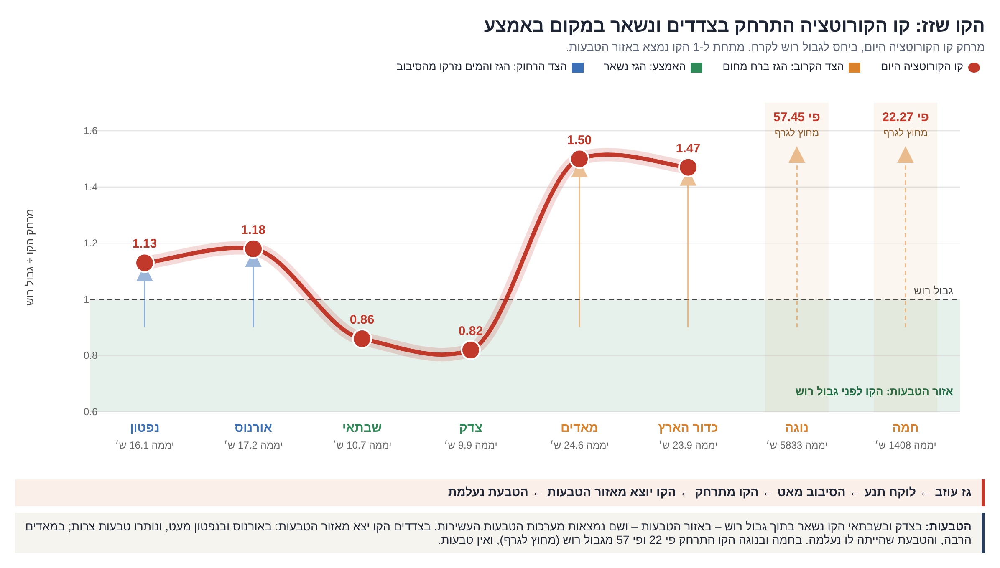

12. הטבעות
טבעת שוברת, שוחקת ומחזירה: מקור החומר, הדינמיקה והעקבות על הירחים ועל כוכב האם
בסדרת המחקר נקבע כי טבעת פלנטרית אינה מהווה אתר אקרציה לבניית ירחים, אלא מנגנון של שחיקה ופירוק [מאמר 11]. מאמר זה מרחיב עיקרון זה לכדי מודל פיזיקלי ודינמי אחיד של מערכות טבעות, המגדיר את מקור החומר, תנאי השימור של הטבעת, מנגנוני התנועה של המסה, והחתימות המורפולוגיות הנותרות על הירחים ועל כוכב האם. 1.
תקציר
בסדרת המחקר נקבע כי טבעת פלנטרית אינה מהווה אתר אקרציה לבניית ירחים, אלא מנגנון של שחיקה ופירוק [מאמר 11]. מאמר זה מרחיב עיקרון זה לכדי מודל פיזיקלי ודינמי אחיד של מערכות טבעות, המגדיר את מקור החומר, תנאי השימור של הטבעת, מנגנוני התנועה של המסה, והחתימות המורפולוגיות הנותרות על הירחים ועל כוכב האם.
1. מקור המסה של הטבעות: כלל החומר המרכיב טבעת פלנטרית מקורו בגוף האם, דרך שני נתיבים מכניים:
• הזנה ישירה: פליטת חומר מפני השטח של ההורה (לבה, מים ואדים) אשר לא חצתה את קו הקורוטציה; מסה זו נותרת לכודה במסלול, נשחקת ומתפזרת מבלי להתגבש לירח.
• הזנה משנית: פליטת חומר מירחים שנוצרו מההורה וממשיכים להזין את המערכת (ירחים נלכדים אינם נכללים בכלל זה).
טבעות שבתאי – המורכבות מ-95%–99% קרח מים במסה כוללת של בדיסקה משוונית דקה – מקורן בפנים הכוכב ואינן תוצר של לכידת אבק בין-פלנטרי.
2. משוואת קיום הטבעת (שיווי משקל דינמי): מערכת טבעת מתקיימת כל עוד מתקיימת בה הזנת מסה רציפה. בשבתאי נמדד קצב פינוי מסה ("גשם טבעות") של אל תוך הכוכב; בהיעדר אספקת חומר, מערכת הטבעות הייתה מתפרקת ונעלמת בטווח של 11 מיליון עד 1.1 מיליארד שנים. לפיכך, הטבעת מהווה זרימת מסה מתמדת בשיווי משקל הניזונה מבפנים, בעלות מצטברת של עד כחלק אחד ממאה אלף () ממסת שבתאי. במאדים, הפסקת פעולת המשאבה ההידרודינמית והתייבשות הירחים הביאו להיעלמות הטבעת. טבעת נטולת הזנה ישירה או הזנת ירח (כגון הטבעות הצרות חסרות הירח של אורנוס וטבעות Galle ו-Lassell בנפטון) נידונה להתפוגגות.
3. שני התנאים להיווצרות טבעת מסיבית:
• תנאי דינמי-גאומטרי: קו הקורוטציה חייב להימצא מתחת לגבול רוש (). השוואת שתי המשוואות מביאה לצמצום צפיפות ההורה, ומניבה תקופת סיבוב קריטית אחידה לכל גרמי השמים: (מחייב ).
• תנאי תרמודינמי-מבני: דליפת חומר פעילה מפני השטח או המעטפת של כוכב האם.
רק שבתאי בעידן הנוכחי ומאדים הקדמון עומדים בשני הקריטריונים במקביל. צדק מקיים את תנאי המהירות (), אך מעטה הגז העבה שלו חוסם דליפת מים; אורנוס ונפטון איטיים מדי וקפאו. טבעות ענקי הגז והקרח ממוקמות מתחת לקו הקורוטציה או סביבו, בעוד טבעות הגופים הקטנים ממוקמות מעליו, בסמוך לרדיוס התהודה המסלולית 1:3.
4. אובדן תנע זוויתי באמצעות בריחת מים: באורנוס ובנפטון, קו הקורוטציה נדד ראדיאלית החוצה. הירחים המודרניים מסבירים רק 1% (באורנוס) ו-0.002% (בנפטון) מהתנע הזוויתי שאבד לכוכבים. המים שנמלטו דרך קו הקורוטציה שקלו פי 270 ממסת כלל ירחי אורנוס, ונפלטו לחלל החיצון. אובדן מים מסיבי זה נובע מעובי המכסה האטמוספירי הדק וממהירות הבריחה הנמוכה של ענקי הקרח, ולא מתנאי הטמפרטורה.
5. חתימות מורפולוגיות על הירחים: טבעת קרחונית גורמת לספיחת מסה (יצירת רכסים משווניים על פני Pan, Atlas ו-Daphnis), בעוד טבעת סיליקטית גורמת לשחיקה מכנית (דימוס שהה ממושכות בלב הטבעת של מאדים ונשחק, בעוד פובוס חצה את שפתה התחתונה ונשחק חלקית). לא אותרה טבעת סביב אף ירח במערכת השמש.
הדרישות הכמותיות, התחזיות וקריטריוני ההפרכה מרוכזים בחלק L.
מה המאמר מציע
• טענה מרכזית: טבעת פלנטרית היא שלב ביניים בזרימת מסה מחזורית היוצאת מכוכב האם וחוזרת אליו. כלל חומר הטבעת מקורו בהורה (ישירות מהקרקע או דרך ירחים מקוריים), והטבעת שומרת על יציבותה כל עוד נמשכת הזנת החומר. הטבעת אינה מייצרת ירחים, אך מעצבת מחדש את המורפולוגיה של הירחים החוצים אותה. טבעת מסיבית נוצרת בלעדית כאשר תקופת הסיבוב הצירי של ההורה קצרה מ-13.4 שעות והקרום הפנימי דולף.
• משוואות ופרמטרים מרכזיים:
• מיקום קו הקורוטציה:
• גבול רוש לחלקיקי קרח:
• תקופת סיבוב קריטית לטבעת מסיבית:
• קצב גשם טבעות בשבתאי:
• מסת טבעות שבתאי:
סביבת העבודה
| גודל פיזיקלי | ערך נמדד / מחושב | מקור |
|---|---|---|
| מסת טבעות שבתאי | (כ-40% ממסת מימס) | Iess et al. 2019 |
| הרכב טבעות A ו-B בשבתאי | 95%–99% קרח מים | Cuzzi et al. 2010 |
| עובי אנכי של הטבעות | טבעות צפופות: כ-; טבעת E: אלפי קילומטרים | Cuzzi et al. 2010 |
| גשם טבעות נייטרלי (לקו המשווה) | Waite et al. 2018 | |
| גשם טבעות מיונן (לאורך קווי השדה) | O'Donoghue et al. 2019 | |
| קו הקורוטציה (ברדיוסי הכוכב) | צדק: ; שבתאי: ; אורנוס: ; נפטון: | חישוב [חלק A.3] |
| יחס עומק חציוני לרוחב בשקעים | דימוס: ; פובוס: | Ernst et al. 2023; מאמר 10 |
PART Aמבוא – שני קווים סביב כל כוכב
A.1השאלה המחקרית
לכלל ארבעת ענקי הגז והקרח במערכת השמש קיימות מערכות טבעות, אך מאפייניהן הפיזיקליים שונים בתכלית: טבעות שבתאי מסיביות ובעלות אלבדו גבוה, טבעות צדק דלילות ומורכבות מאבק, וטבעות אורנוס ונפטון צרות וכהות. בנוסף, לשלושה גופים קטנים בקצה מערכת השמש (Haumea, Chariklo, Quaoar) קיימות טבעות צפופות, שאחת מהן ממוקמת הרחק מעבר לגבול רוש. לכוכבי הלכת הפנימיים אין טבעות בעידן הנוכחי, אולם למאדים הייתה מערכת טבעות קדמונית [מאמר 10; Ćuk et al. 2020]. לא אותרה טבעת סביב אף ירח במערכת השמש.
מאמר 11 ביסס את קו הקורוטציה כציר שסביבו מתגבשים ירחים, והגדיר טבעת כאתר של שחיקה ופירוק מכני. פרק זה בוחן כיצד יחסי הגומלין הגאומטריים והדינמיים בין קו הקורוטציה לגבול רוש קובעים את מיקום הטבעת, הרכבה הכימי, משך חייה והשפעתה המבנית על גופים החוצים אותה.
A.2קו הקורוטציה וגבול רוש
• קו הקורוטציה (רדיוס סינכרוני): המרחק הרדיאלי ממרכז כוכב האם שבו גוף מקיף משלים הקפה מסלולית בזמן הזהה לתקופת הסיבוב הצירי של הכוכב:
• מתחת לקו (): מהירות ההקפה המסלולית גבוהה ממהירות הסיבוב הצירי של ההורה. בליטת הגאות המושרה בכוכב מפגרת אחרי הגוף המקיף, מפעילה עליו כוח בלימה, ומאלצת אותו לנדוד ראדיאלית פנימה.
• מעל לקו (): מהירות ההקפה המסלולית נמוכה ממהירות הסיבוב הצירי של ההורה. בליטת הגאות מקדימה את הגוף, מאיצה אותו, ודוחפת אותו ראדיאלית החוצה [מאמר 11, A.6].
• גבול רוש (): המרחק הרדיאלי שמתחתיו כוחות הגאות הדיפרנציאליים של גוף האם גוברים על הכבידה העצמית של גוף רך, ומונעים התגבשות הידרוסטטית. עבור חלקיקי קרח מים, הגבול מוגדר באמצעות המשוואה:
כאשר הוא רדיוס הכוכב, צפיפותו הממוצעת, ו- צפיפות הקרח.
A.3היכן יושבות הטבעות
נרמול מיקום הטבעות וגבול רוש ביחידות של רדיוס הקורוטציה () מאפשר השוואה ישירה בין גרמי שמים בעלי מסות ומהירויות סיבוב שונות על גבי סרגל דינמי אחיד:
| גוף אם | קו הקורוטציה () | טווח הטבעות () | מיקום הטבעות ביחידות | גבול רוש לקרח ביחידות | סיווג מיקום ביחס לקו |
|---|---|---|---|---|---|
| צדק | 160,000 | 92,000–226,000 (הילה, ראשית, גוסמר) | 1.25 | סביב הקו | |
| שבתאי | 111,600 | 66,900–136,800 (טבעות D עד A) | 1.21 | סביב הקו; הקצה החיצוני בגבול רוש | |
| אורנוס | 82,700 | 41,800–51,100 | 0.85 | מתחת לקו | |
| נפטון | 83,500 | 41,900–62,900 | 0.89 | מתחת לקו | |
| Haumea | 1,104 | 2,287 | 2.07 | 2.27 | מעל הקו |
| Chariklo | 186 | 391; 405 | 2.10; 2.18 | 1.71 | מעל הקו |
| Quaoar | 2,020 | 2,520; 4,057 | 1.25; 2.01 | 0.83 | מעל הקו; שתיהן מחוץ לגבול רוש |
הנתונים חושפים חלוקה ברורה לשתי משפחות דינמיות נפרדות (איורים A.1 ו-A.2):
1. משפחת ענקי הגז והקרח: הטבעות ממוקמות מתחת לקו הקורוטציה או חוצות אותו (), ברובן בתוך גבול רוש; החלק שמתחת לקו נודד פנימה ונופל אל כוכב האם. בשבתאי, הקצה החיצוני של טבעת A () חופף כמעט במדויק לגבול רוש לקרח ().
2. משפחת הגופים הקטנים (כוכבי לכת ננסיים וקנטאורים): הטבעות ממוקמות הרחק מעל קו הקורוטציה (), באזור שבו ווקטור הגאות דוחף מסה החוצה. מרביתן מתרכזות בסמיכות לערך – הרדיוס המדויק של תהודה סיבובית-מסלולית ביחס 1:3 (Spin-orbit resonance), שבו חלקיק בטבעת משלים הקפה אחת בזמן שגוף האם משלים שלושה סיבובים סביב צירו [Sicardy et al. 2019].


PART Bמקור החומר
B.1דליפה מבפנים
בהתאם למודל שגובש במאמר 11, תהליך הדיפרנציאציה דוחף מים ורכיבים נדיפים קלי-משקל ממעמקי הכוכב כלפי מעלה (עקרון המשאבה), בעוד מעטה הגז האטמוספירי כולא אותם (עקרון המכסה). חסימה זו אינה הרמטית לחלוטין: חלק מהמסה דולף אל אזור קו הקורוטציה, נלכד בתוך גבול רוש ומזין את מערכת הטבעות. מנגנון זה מבטיח התחדשות רציפה של הטבעת כל עוד תהליך הדיפרנציאציה נמשך ופתח הפליטה נותר פעיל.
במערכת מאדים הקדמונית, הזנת הטבעת עברה דרך מערכת הפליטה הגעשית שעל הבליטה. כל עוד הקרום התאפיין בצמיגות נמוכה ואיפשר פליטת נדיפים, הטבעת הוזנה במסה גבוהה. עם האטת מהירות הסיבוב, התקדמות המיון והתעבות הקרום הקר, נחסם מוצא המשאבה, ההזנה פסקה והטבעת התפוגגה [מאמר 10].
B.2שלילת מקור אבק בין-פלנטרי
• טוהר כימי: טבעות A ו-B של שבתאי מורכבות מ-95%–99% קרח מים טהור [Cuzzi et al. 2010]. אבק בין-פלנטרי מורכב מתערובת כהה של סיליקטים, פחמן ומתכות; אילו הטבעות נבנו מאבק חלל, האלבדו שלהן היה נמוך מראשית היווצרותן.
• מנגנון זיהום חיצוני: נתוני הגשושית Cassini מדדו ישירות את קצב נפילת המיקרו-מטאורואידים על הטבעות [Kempf et al. 2023]. אבק החלל מזהם טבעת קיימת ואינו מהווה את חומר הבנייה שלה. הפער באלבדו בין טבעת C הכהה לטבעות A ו-B הבהירות נובע מקצב זיהום זהה: טבעת דלילה במסה מתלכלכת מהר יותר ביחס לטבעת צפופה [Cuzzi & Estrada 1998].
• התפלגות מסה וגיאומטריה: מסה של מרוכזת בדיסקה משוונית דקה שעוביה האנכי עשרות מטרים. אבק החודר למערכת מכל הכיוונים (איזוטרופי) אינו נושא וקטור תנע זוויתי אחיד ואינו מסוגל לשקוע לדיסקה משוונית שטוחה אחת; נדרש מקור הזנה פנימי המסתובב בסינכרוניזציה עם כוכב האם.
• מתאם לעובי המכסה האטמוספירי: בשבתאי, מעטה הגז העבה כולא את המים ומייצר טבעת קרח טהורה כמעט לחלוטין. באורנוס ובנפטון, המכסה דק והמים ברחו דרך קו הקורוטציה [מאמר 11, A.9], ולכן נותרו טבעות צרות וכהות. בצדק, שבו המכסה עבה במיוחד, הטבעות מורכבות מאבק דליל המוזן מהירחים הפנימיים בלבד [Owen et al. 1979]. במאדים, הטבעת הורכבה מאדים מעובים ומחומר סיליקטי מהקרום [מאמר 10].
B.3ירח שמזין טבעת
טבעת E של שבתאי מוזנת ישירות מסילוני אדי מים וקרח הנפלטים מאנקלדוס. בצדק, הירחים הפנימיים Metis, Adrastea, Amalthea ו-Thebe משחררים את האבק המזין את מערכת הטבעות. כיוון זרימת החומר הוא חד-כיווני: ירח מזין טבעת, וטבעת אינה מייצרת ירח.
B.4שני נתיבי הזנה ותנאי שימור הטבעת
כלל החומר המרכיב מערכות טבעות יוצא מגוף האם בשני נתיבים מכניים:
1. הזנה ישירה: חומר שנפלט מפני השטח של ההורה (לבה, מים, אדים ואבק) ונותר מתחת לקו הקורוטציה. חומר זה נלכד במסלול, נשחק ומתפזר מבלי להתגבש לירח. בנתיב זה מוזנות טבעות D, C ו-B של שבתאי (נטולות ירחים), וכך הוזנה טבעת מאדים הקדמונית [מאמר 10].
2. הזנה דרך ירחים: ירחים מקוריים שנולדו מההורה וממשיכים לפלוט מסה. אנקלדוס מזין את טבעת E בסילוני מים; Metis, Adrastea, Amalthea ו-Thebe מזינים את טבעות צדק באבק המותז מפגיעות מיקרו-מטאורואידים [Burns et al. 1999]; הירח Mab מזין את טבעת של אורנוס.
טבעת שומרת על קיומה כל עוד מתקיימת הזנה באחד משני הנתיבים. ירח משמש כמקור הזנה רק אם הוא פעיל גיאולוגית או פולט אבק; ירחים יבשים וסטטיים (כגון פובוס ודימוס) אינם מזינים טבעות. כאשר ההזנה מהקרקע נפסקת והירחים יבשים, הטבעת מתפוגגת – מנגנון המסביר את היעלמות טבעת מאדים. טבעת נטולת ירח מזין ונטולת דליפה מהקרקע מצויה בשלב פוסט-לידתי וצפויה להיעלם (F.3).
• דינמיקת פיזור האבק הרחוק: הפלזמה הממוגנטת המסתובבת עם כוכב הלכת דוחפת אבק שמעבר לקו הקורוטציה ראדיאלית החוצה; במרחקים גדולים, גרר קרינת השמש (אפקט Poynting–Robertson) בולם את החלקיקים ומסיע אותם חזרה פנימה. כתוצאה מכך, אבק מטבעת Phoebe נוחת על ההמיספרה המובילה של יאפטוס ויוצר את צדו הכהה [Verbiscer et al. 2009], ואבק מטבעת E מצפה את פני השטח של מימס, טתיס, דיונה וריאה [Verbiscer et al. 2007].
• סייג לירחים נלכדים: ירח שנלכד מבחוץ (על פי פרוטוקול הניקוד L.3 במאמר 11) אינו חלק ממעגל החומר של ההורה; לפיכך, טבעת Phoebe (הקשורה לירח נלכד) מוחרגת מהמודל.

B.5שני תנאים להיווצרות טבעת מסיבית
קיומה של טבעת מסיבית המוזנת ישירות מקרקע ההורה מותנה בהתקיימותם הסימולטנית של שני קריטריונים פיזיקליים (בדומה למודל רשת וכדורים – הרשת חייבת להיות מוצבת במיקום הנכון, וחייבת להתקיים זריקת מסה):
• תנאי 1 – מיקום קו הקורוטציה בתוך גבול רוש (): חומר הדולף מפני השטח מגיע לאזור קו הקורוטציה (B.1). אם הקו ניצב מתחת לגבול רוש, כוחות הגאות הדיפרנציאליים מונעים התגבשות הידרוסטטית והמסה נותרת במצב טבעת. אם הקו ניצב מעבר לגבול רוש, החומר אינו נלכד כטבעת. חלוקת משוואת קו הקורוטציה במשוואת גבול רוש מביאה לצמצום מלא של צפיפות כוכב הלכת ():
כאשר היא תקופת הסיבוב הצירי (יממה) של ההורה ו-. מכאן נגזר כלל אוניברסלי: קו הקורוטציה נמצא מתחת לגבול רוש אם ורק אם יממת ההורה קצרה מ-13.4 שעות, ללא תלות במסת הגוף, ברדיוסו או בכבידה על פני השטח (לצדק הכבידה החזקה ביותר, ואילו לשבתאי כבידה הדומה לזו של כדור הארץ).
• תנאי 2 – דליפה אקטיבית מהקרקע: מעטה הגז האטמוספירי אינו אוטם לחלוטין את פנים הכוכב, והשכבה החיצונית לא עברה קפיאה מלאה או התייבשות תרמית.
מטריצת התנאים להיווצרות טבעת מסיבית במערכת השמש
| כוכב ותקופה | יממה (שעות) | מיקום הקו () | גבול רוש לקרח () | תנאי 1 () | תנאי 2 (דליפה מהקרקע) | התוצאה הדינמית |
|---|---|---|---|---|---|---|
| שבתאי היום | 10.6 | 1.92 | 2.24 | כן | כן: המכסה דולף | טבעת מסיבית מהקרקע |
| מאדים הצעיר | 7–9 | 1.74–2.05 | 2.68 | כן | כן: הר געש על בליטה | הייתה טבעת קדמונית |
| צדק היום | 9.9 | 2.29 | 2.80 | כן | כמעט אין (מכסה עבה ביותר) | טבעת אבק מירחים בלבד |
| כדור הארץ בלידה | 5.8 | 2.29 | 4.02 | כן | לא: התייבש מהר | אין טבעת; הירח נבנה |
| אורנוס היום | 17.2 | 3.26 | 2.76 | לא | לא: המים ברחו, קפא | שרידים צרים וטבעות ירחים |
| נפטון היום | 16.1 | 3.39 | 3.00 | לא | לא: קפא | שרידים צרים וטבעות ירחים |
| מאדים היום | 24.6 | 6.03 | 4.02 | לא | לא: הקרקע נסגרה | הטבעת נעלמה |
| כדור הארץ היום | 23.9 | 6.62 | 4.49 | לא | לא | אין טבעת |
• אנליזת תוצאות המטריצה: טבעת מסיבית הניזונה מהקרקע מתפתחת אך ורק כאשר שני התנאים מתקיימים סימולטנית – שבתאי כיום ומאדים הצעיר. לצדק מהירות סיבוב העומדת בתנאי 1, אך המכסה האטמוספירי העבה חוסם דליפת מים. כדור הארץ ברגע הלידה קיים את תנאי 1, אך התייבשותו התרמית חסמה הזנת טבעת. אורנוס ונפטון מסתובבים ביממה של 16–17 שעות (מעל סף 13.4 השעות), קו הקורוטציה שלהם חורג מגבול רוש, והקרום הקפוא חוסם פליטה. במאדים נצפית דעיכה דו-שלבית: האטת הסיבוב דחפה את הקו מעבר לגבול רוש, סגירת הקרום הפסיקה את ההזנה, והטבעת נעלמה. בדומה לקשת הלידות במאמר 11, מערכות הטבעות מגיעות לשיא בשבתאי עקב האיזון בין מניעת התייבשות (קרוב לשמש) למניעת קפיאה (רחוק מהשמש).

איור B.3 מראה את התנאי הראשון לאורך מערכת השמש. מרחק קו הקורוטציה היום ביחס לגבול רוש יוצר צורת U: בצדק ובשבתאי הקו נמצא בתוך גבול רוש (0.82 ו-0.86), ושם מערכות הטבעות העשירות. בצדדים הקו התרחק אל מחוץ לאזור הטבעות – מעט באורנוס ובנפטון (1.18 ו-1.13), שבהם נותרו טבעות צרות, והרבה במאדים (1.50), שהטבעת שלו נעלמה, ובכדור הארץ (1.47); בחמה ובנוגה פי 22 ופי 57. אנו מציעים שהקו התרחק בצדדים משום שמסה עזבה דרך הקו – גז ומים – ונשאה תנע: בצד הקרוב בגלל חום השמש הצעירה, ובצד הרחוק בגלל הסיבוב. באמצע מכסה הגז העבה נשאר, והסיבוב נשאר מהיר. החישוב, כוכב אחר כוכב, עם כל הפרמטרים, נמצא במאמר 11 (סעיף L.1, טבלה L.1).

PART Cטבעת שוברת ושוחקת, ואינה בונה
C.1דינמיקה בתוך גבול רוש
בתוך גבול רוש, מאמצי הגאות הדיפרנציאליים של גוף האם גוברים על כוחות הכבידה העצמית של חלקיקי הטבעת ומונעים התגבשות הידרוסטטית. כל גוף מסיבי החוצה את גבול רוש פנימה נקרע מכנית ונטחן בהתנגשויות הדדיות לכדי חצץ ואבק. טבעת A של שבתאי מסתיימת בדיוק בגבול רוש לקרח, ומעבר לקו זה לא התגבש אף ירח מחומר הטבעת.
C.2דינמיקה מחוץ לגבול רוש
הטבעת החיצונית של כוכב הלכת הננסי Quaoar ממוקמת במרחק של , ערך הגבוה פי 2.4 מגבול רוש לקרח. על פי מודלים קלאסיים, חומר המצוי במרחק כזה אמור להתגבש לירח בתוך עשרות שנים ספורות, אך בפועל נצפית טבעת צפופה ויציבה [Morgado et al. 2023]. ממצא זה מתיישב במלואו עם המנגנון האחיד: טבעת אינה מייצרת ירחים, גם כאשר כוחות הגאות של ההורה אינם מונעים התגבשות. באופן דומה, טבעות הקנטאור Chariklo ממוקמות אף הן מעט מעבר לגבול רוש.
C.3מורפולוגיית ירחי הטבעות
הירחים הזעירים המצויים בתוך מערכת טבעות שבתאי ובשוליה – Pan, Daphnis, Atlas, Prometheus, Pandora, Janus ו-Epimetheus – מתאפיינים בצפיפות נמוכה ביותר של [Porco et al. 2007]. בהתאם למאמר 11, גופים אלו אינם תוצר התגבשות של הטבעת, אלא שרידים של ירחים קדמוניים שעברו שחיקה וליטוש בתוך הטבעת, ועל גביהם הצטברה שכבת חומר טבעת. ספיחת מסה על גבי גרעין קיים אינה מהווה בריאת ירח חדש. המודל התיאורטי של Crida ו-Charnoz, הגורס התגבשות ירחים כתוצאה מהתפשטות דיסקת טבעת מעבר לגבול רוש, מבוסס על סימולציה נומרית בלבד ואינו מגובה בממצא תצפיתי.
C.4הטבעת כאתר השמדה
המודל של Wisdom ועמיתיו, המציע כי טבעות שבתאי נוצרו כתוצאה מהתקרבות ירח קדמון אל מתחת לגבול רוש והתפרקותו, תואם את העיקרון המכני של המנגנון האחיד: טבעת פלנטרית מתפקדת כאתר פירוק והשמדה של ירחים, ולא כאתר בנייה.
PART Dהדינמיקה – מה חוזר ומה יוצא
D.1רוב החומר חוזר פנימה
בתוך דיסקת טבעת, חלקיקים במסלולים פנימיים נעים במהירות זוויתית גבוהה יותר מחלקיקים במסלולים חיצוניים (תנועה קפלריאנית דיפרנציאלית). התנגשויות בלתי-אלסטיות בין החלקיקים ממירות אנרגיה מסלולית לאנרגיה תרמית (חום), בעוד שהתנע הזוויתי הכולל של הדיסקה נשמר. קיום שני חוקי שימור אלו במקביל מאלץ התפשטות צמיגה (Viscous spreading): עיקר המסה של הטבעת מאבדת אנרגיה וזורמת פנימה אל כוכב האם, בעוד חלק קטן מהמסה נדחף ראדיאלית החוצה ונושא עמו את עודף התנע הזוויתי [Lynden-Bell & Pringle 1974]. הטבעת מתפקדת כמשפך דינמי המחזיר את רוב החומר להורה.
D.2הקו מחלק
מנגנונים הפועלים בסינכרוניזציה עם סיבוב הכוכב בולמים חומר הממוקם מתחת לקו הקורוטציה ומפילים אותו פנימה, ודוחפים החוצה חומר הממוקם מעל לקו. על ירחים ועל גושים מסיביים פועלים מומנטי גאות גרביטציוניים; על חלקיקי אבק טעונים חשמלית פועל השדה המגנטי הפלנטרי המסתובב יחד עם ההורה. טבעת צפופה ומסיבית מתנהגת בעיקרה כגוף רציף המתפשט מכנית (D.1).
• עדות אמפירית לפעולת הקו על אבק: תופעת ה"חישורים" (Spokes) במערכת הטבעות של שבתאי מופיעה בחלקה החיצוני של טבעת B, בטווח רדיאלי שבין ל- – גבול החופף במדויק למיקום קו הקורוטציה () [Callos et al. 2025].
• העברת תנע לירחים בשולי הטבעת: הטבעת מעבירה מומנט תנע זוויתי לירחים הנמצאים בשוליה ודוחפת אותם ראדיאלית החוצה [Goldreich & Tremaine 1980]. במערכת מאדים הקדמונית, מנגנון זה דחף את דימוס החוצה, בעוד שפתה הפנימית הגזית של הטבעת אחזה בפובוס על גבי קו הקורוטציה והעתיקה אותו החוצה יחד עם הקו, עד להתייבשות הטבעת ברדיוס של כ- [מאמר 10].
D.3שבתאי: זרימה מתמדת
מדידות הגשושית Cassini תיעדו את נפילת החומר מטבעות שבתאי אל האטמוספירה בשני ערוצים מקבילים: חומר נייטרלי הזורם אל מישור קו המשווה בקצב של [Waite et al. 2018], וחומר מיונן הזורם לאורך קווי השדה המגנטי בקצב של [O'Donoghue et al. 2019].
| קצב נפילת המסה () | זמן התרוקנות הטבעת ללא הזנה | סך ההזנה הנדרשת ל-4.5 מיליארד שנים | שבר מסה מתוך מסת שבתאי הכוללת |
|---|---|---|---|
| 432 | 1.1 מיליארד שנים | 4 מסות טבעת | |
| 2,870 | 170 מיליון שנים | 26 מסות טבעת | |
| 4,800 | 100 מיליון שנים | 44 מסות טבעת | |
| 45,000 | 11 מיליון שנים | 415 מסות טבעת |
בהיעדר אספקת חומר, מערכת הטבעות הייתה מתפרקת בפרק זמן הקצר משמעותית מגיל מערכת השמש; ממצא זה הוביל בספרות למסקנה כי הטבעות צעירות כרונולוגית [Iess et al. 2019; Kempf et al. 2023]. על פי המנגנון האחיד, הטבעת אינה שריד סטטי אלא זרימה מתמדת בשיווי משקל דינמי: היא מתחדשת ברציפות מדליפה תחתונה ומתרוקנת מלמעלה כגשם טבעות. המראה ה"צעיר" של הטבעת נובע מתחלופת חומר מתמדת, בעוד התהליך הגיאודנמי עצמו עתיק יומין.
• דרישה מכנית במצב יציב: קצב דליפת המסה מגוף האם אל הטבעת שווה במדויק לקצב פינוי המסה של גשם הטבעות. העלות המסתית המצטברת לאורך כל חיי שבתאי מגיעה לכל היותר לכחלק אחד ממאה אלף () ממסת כוכב הלכת, ולפיכך עומדת במגבלות שימור המסה.
D.4לאן הלך התנע: ירחים או מים
התרחקות רדיאלית של קו הקורוטציה מעידה על אובדן תנע זוויתי של כוכב הלכת. החישוב הבא משווה את סך התנע הזוויתי שאיבד ההורה מאז שלב הלידה מול התנע המסלולי האגור במערכת הירחים הסדירים כיום (תחת מקדמי מומנט אינרציה עבור אורנוס ו- עבור נפטון; כמות המים מחושבת עבור פליטה מקו הקורוטציה הקדמון ב- [מאמר 11]):
| כוכב לכת | שינוי היממה הצירית | התנע הזוויתי שאבד () | תנע מסלול הירחים () | חלק הירחים באובדן התנע | מסת המים הנדרשת לפליטה דרך הקו |
|---|---|---|---|---|---|
| אורנוס | (כ- ממסת הכוכב) | ||||
| נפטון | (כ- ממסת הכוכב) | ||||
| צדק | הירחים נושאים כ- מתנע הסיבוב | כולו | לא נדרשים | ||
| שבתאי | הירחים נושאים כ- מתנע הסיבוב | כולו | לא נדרשים |
• אורנוס ונפטון: מסת הירחים הסדירים זעירה מכדי לשאת את התנע שאבד; עיקר התנע הזוויתי נפלט באמצעות מים ונדיפים שחצו את קו הקורוטציה. מסת המים שעזבה את אורנוס () גדולה פי 270 ממסת כלל ירחיו הסדירים יחד (). אילו מים אלו היו מתגבשים לירחים, התנע הזוויתי היה נשמר במערכת הירחים; לפיכך, המים נפלטו החוצה אל החלל הבין-פלנטרי. החישוב המלא – עם רדיוס הלידה, הדחיסות והפחיסות – נמצא במאמר 11 (טבלה L.1): 1.6%–10.8% מהמסה, מים וגז.
• צדק ושבתאי: קו הקורוטציה נותר כמעט סטטי, והירחים לבדם מסבירים את העברת התנע הזעירה, בהתאמה מלאה למכסה האטמוספירי העבה החוסם בריחת מים. גם הטבעות אינן אוגרות תנע משמעותי: מסת טבעות שבתאי מהווה כחלק אחד מעשרת אלפים () ממסת ירחיו.
• החזרת מסה בירח פעיל: מרבית גרגירי הקרח הנפלטים בסילוני אנקלדוס נופלים חזרה על פני השטח שלו כשלג, ורק שבר זעיר נמלט ומזין את טבעת E [Kempf et al. 2010].
מנגנון אובדן המים בענקי הקרח הרחוקים
אובדן המים המסיבי דווקא בענקי הקרח המרוחקים (אורנוס ונפטון) ולא בענקי הגז הפנימיים (צדק ושבתאי) נובע משלושה גורמים פיזיקליים:
1. עובי המכסה האטמוספירי: המרחק מהשמש הכתיב את זמן האקרציה של הגלעין המוצק טרם התפזרות הדיסקה הקדם-פלנטרית [מאמר 11]. צדק (90%–97% גז) ושבתאי (70%–85% גז) אספו מכסה אטמוספירי עבה הכולא את המים בפנים, בעוד אורנוס ונפטון (10%–20% גז) נותרו עם מכסה דק המאפשר דליפה חופשית.
2. מהירות הבריחה (עומק בור הפוטנציאל): מהירות הבריחה מוגדרת כסף האנרגטי המינימלי הנדרש לניתוק מכבידת הכוכב. צדק () ושבתאי () מהווים בורות פוטנציאל עמוקים הכולאים את המים, בעוד אורנוס () ונפטון () מתאפיינים בבורות פוטנציאל רדודים המאפשרים למים לחצות את סף הבריחה תחת אותה דחיפה סיבובית.
3. פליטה מכנית לעומת התאדות תרמית: בריחת המים לא הונעה על ידי קרינה תרמית, אלא על ידי העלאה מכנית של מסה אל קו הקורוטציה בשלב הסיבוב המהיר (יממה של 7–8 שעות) ודחיפה צנטריפוגלית מעבר לקו.
הבחנה בין מנגנוני התייבשות: בקרבה לשמש (כגון נוגה), מים מתפרקים בפוטוליזה מקרינה על-סגולה ומאבדים מימן לחלל; בענקי הגז והקרח המרוחקים, הפליטה מוכתבת על ידי עובי המכסה האטמוספירי ועומק בור הפוטנציאל הכבידתי.
יחס מסת הירחים הסדירים למסת כוכב האם
| מערכת פלנטרית | שבר מסת הירחים הסדירים מתוך מסת ההורה |
|---|---|
| כדור הארץ | |
| צדק | |
| שבתאי | |
| אורנוס | |
| נפטון (ללא טריטון שנלכד) | |
| מאדים |
PART Eהמיון בטבעת
E.1מיון בהתנגשויות, לא בשקיעה גרביטציונית
בפנים כוכב לכת, הפרדה חומרית מונעת על ידי ציפה ושקיעה גרביטציונית בהתאם לצפיפות. בטבעת פלנטרית, חלקיק צפוף וחלקיק קל הנמצאים באותו רדיוס מסלולי נעים באותה מהירות קפלריאנית, ולפיכך אינם נפרדים בשקיעה. המיון המבני בטבעת מבוצע באמצעות העברת תנע בהתנגשויות: גוף מסיבי וקשיח שומר על מסלולו היציב, בעוד חלקיקים קלים או רכים מקבלים מתקף קינטי, נזרקים לצדדים ונשחקים.
E.2ממצאים תצפיתיים של מיון התנגשויות
• מבני "מדחפים" (Propellers): בטבעת A של שבתאי תיעדה Cassini עשרות מבנים דמויי מדחף, שבמרכז כל אחד מהם גוף קשיח בקוטר של כ-, ומשני צדיו נתיבים מרוקנים מחומר באורך של מספר קילומטרים [Tiscareno et al. 2006]. מבנים אלו ממוקמים בטבעת A, מעבר לקו הקורוטציה, שם הגושים אינם נופלים לכוכב ומפנים לעצמם מסלול נקי על ידי דחיקת חלקיקים קלים הצידה.
• עובי הדיסקה: בטבעות הצפופות של שבתאי, גושים בקוטר סנטימטרים עד מטרים מרוכזים בשכבה אנכית דקה בעובי של כ-. חלקיקים זעירים צוברים בהתנגשויות מהירויות אקראיות גבוהות יותר ומתפזרים לשכבה אנכית עבה יותר.
• התפלגות גדלים: שכיחות הגושים בטבעת יורדת כפונקציה של קוטרם () על פי חוק חזקה:
התפלגות זו מהווה חתימה סטטיסטית מובהקת של מערכת טחינה וריסוק מכני מתמשך [Zebker et al. 1985].
• מערכת אורנוס: מורכבת מטבעות צרות של גושים בגודל סנטימטרים עד מטרים, המופרדות ביניהן ברצועות של אבק דק.
E.3אלמנט הזמן: הטבעת כמסוע שחיקה
ממדי הגוש בטבעת משמשים כמדד כרונולוגי למשך שהותו במערכת: גוש גדול הוא גוף צעיר שטרם עבר שחיקה מלאה. גושים בגודל של ירחים זעירים חודרים אל הטבעת, מתפרקים במרכזה ונטחנים לאבק. על פי מנגנון ההתפשטות הצמיגה (D.1), רוב האבק המרוסק זורם פנימה אל כוכב האם, ומיעוטו נדחף החוצה. הטבעת מתפקדת כמסוע חד-כיווני שבו גושים גדולים נכנסים ואבק יוצא.
• תחזית מבנית: הריכוז הגבוה ביותר של גושים גדולים ושלמים בטבעת יימצא בסמיכות ישירה לאזור שבו הטבעת מוזנת בחומר.
PART Fמחזור החיים של טבעת
F.1נדידת הקו מעלימה טבעות
מיקום קו הקורוטציה תלוי בקצב הסיבוב הצירי של כוכב האם. כאשר הכוכב מאט – עקב מומנט גאות של ירח מסיבי או עקב בריחת מים דרך הקו הנושאים תנע זוויתי – קו הקורוטציה נודד ראדיאלית החוצה. מסה שמוקמה קודם לכן על הקו או מעליו מוצאת עצמה כעת מתחת לקו החדש; כוחות הגאות בולמים אותה ומאלצים נדידה פנימה וקריסה אל הכוכב. אם במקביל פוסקת אספקת החומר מהקרקע, מערכת הטבעות מתרוקנת ונעלמת.
F.2שלבי האבולוציה של הטבעת
1. שלב ההזנה: קו הקורוטציה סמוך לפני השטח, הדיפרנציאציה פעילה, וחומר דולף ונלכד בתוך גבול רוש. הטבעת מסיבית (שבתאי בעידן הנוכחי; מאדים הקדמון).
2. שלב הדעיכה: המיון הפנימי מתקדם, הקרום מתעבה או המכסה דולף, קצב ההזנה פוחת, וקו הקורוטציה נודד החוצה. נותרות טבעות צרות מתחת לקו (אורנוס ונפטון).
3. שלב ההיעלמות: ההזנה מהקרקע נפסקה ויתרת הטבעת קרסה פנימה. במערכת נותרים הירח שחצה את הקו והמסה שנפלה על ההורה (מאדים: שכבת האבק והירח פובוס הנופל פנימה [מאמר 10]).
• מניעת טבעת בכדור הארץ: בכדור הארץ הקדמון לא התפתחה טבעת ממושכת, שכן מבנה האגס שבנה את הירח סחף את הרצועה המשוונית שבה הייתה נוצרת הטבעת וריכז את החומר שלה לתוך הירח המתגבש [מאמר 10].
F.3טבעות שצפויות להיעלם
על פי כלל שימור הטבעת (B.4), מערכת טבעת נטולת ירח מזין ונטולת הזנה רציפה מקרקע ההורה נידונה להתפוגגות:
| כוכב לכת | טבעות הקשורות לירח | טבעות נטולות ירח | סטטוס ואבחנה גיאודנמית |
|---|---|---|---|
| שבתאי | A (Pan, Daphnis), F (Prometheus, Pandora), G (Aegaeon), E (אנקלדוס) | D, C, B | טבעות D, C ו-B מתקיימות בלעדית עקב הזנה פעילה מהקרקע; קצב גשם הטבעות שנמדד (D.3) מוכיח שבלעדיה הן היו נעלמות. |
| אורנוס | (Cordelia, Ophelia), (בין Portia ל-Rosalind), (Mab) | צפויות להיעלם. לא אותרו ירחים קטנים המחזיקים אותן (בספרות מוגדרת כשאלה פתוחה). | |
| נפטון | Adams (Galatea), Le Verrier (Despina) | Galle, Lassell | צפויות להיעלם. |
| צדק | כלל מערכת הטבעות | — | מתקיימות כל עוד הירחים הפנימיים פולטים אבק. |
| מאדים | — | הטבעת הקדמונית | נעלמה עם הפסקת ההזנה מהקרקע; הירחים יבשים ואינם מזינים. |
PART Gסימן הטבעת על הירח
G.1כלל הזיהוי המורפולוגי
ירח סיליקטי חלק לחלוטין מעיד כי שהה ממושכות בתוך מערכת טבעת.
דימוס הוא הגוף הקטן החלק ביותר שנצפה בסביבת מאדים. אנליזה השוואתית על מודלי הצורה של Ernst et al., שבוצעה באותה מתודולוגיה עבור שני ירחי מאדים, מראה כי העומק החציוני של השקעים בדימוס הוא מרוחבם, לעומת בפובוס. מהשקעים בדימוס רדודים מ- מרוחבם, לעומת בלבד בפובוס [מאמר 10, J.1]. מסלולו של דימוס מעגלי כמעט לחלוטין (אקסצנטריות ) ומשווני. שילוב של מסלול מעגלי-משווני עם טופוגרפיה חלקה מהווה חתימה מובהקת לשהייה ממושכת בלב הטבעת. פובוס חצה את השפה התחתונה של הטבעת הדועכת, ולפיכך עבר שחיקה חלקית בלבד ושימר את מערך החריצים שלו. לכדור הארץ לא הייתה טבעת ממושכת, ובהתאם לכך הירח מציג פני שטח רוויי מכתשים.
מבין כוכבי הלכת, דימוס הוא המקרה היחיד של ירח סיליקטי חלק לחלוטין, ולכוכב האם שלו אין טבעת כיום. ירחי קרח חלקים (כגון אירופה, אנקלדוס וטריטון) פעילים גיאולוגית ומחדשים את פני השטח שלהם, ולכן מוחרגים מכלל זה.
G.2השפעת ההרכב הכימי של הטבעת
אופי השינוי המורפולוגי על פני הירח מוכתב על ידי הרכב החומר של הטבעת:
• טבעת קרח (מנגנון ספיחה): גרגירי קרח קרים עטופים בשכבת כפור ומתלכדים במגע במהירות יחסית נמוכה [Bridges et al. 1984]. מנגנון זה בנה את הרכסים המשווניים הבולטים של Pan, Atlas ו-Daphnis, המעניקים להם צורת "צלחת" [Charnoz et al. 2007].
• טבעת סיליקטית (מנגנון שחיקה): טבעת מאדים הקדמונית הורכבה מאדים מעובים ומחומר סיליקטי מהקרום. גרגירים סיליקטיים קשיחים פועלים כחומר שוחק (אברזיבי), ולפיכך דימוס עבר ליטוש ושחיקה ללא צבירת מסה.
G.3יחסי כבידה מול הרכב החומר
ירח מסיבי אוחז באמצעות שדה הכבידה שלו את החומר המצטבר על קו המשווה שלו. בקרב הירחים הקטנים, לכבידה העצמית אין משקל מכריע, והרכב החומר של הטבעת הוא שקובע אם תתרחש ספיחה או שחיקה:
| ירח | קוטר () | צפיפות () | כבידה על פני השטח () | סביבת הטבעת | חתימה מורפולוגית |
|---|---|---|---|---|---|
| Methone | 2.9 | 310 | 0.0001 | קרח (קשת ליד טבעת G) | חלק, מצופה |
| Daphnis | 7.6 | 340 | 0.0004 | קרח (טבעת A) | רכס משווני |
| Pan | 28 | 400 | 0.0016 | קרח (טבעת A) | רכס משווני |
| Atlas | 30 | 460 | 0.0019 | קרח (שולי טבעת A) | רכס משווני |
| דימוס | 12.4 | 1,471 | 0.0025 | סיליקטית ואדים | נשחק כולו |
| פובוס | 22.2 | 1,860 | 0.0058 | שפה גזית דועכת | נשחק חלקית |
| יאפטוס | 1,469 | 1,088 | 0.22 | ? | רכס משווני (G.6) |
אבחנה פיזיקלית: לדימוס כבידה עצמית חזקה מזו של Pan ו-Atlas, ובכל זאת עליהם הצטברה מסה ואילו דימוס נשחק, עקב ההבדל בין טבעת קרח סופחת לטבעת סיליקטית שוחקת.
G.4היחס בין קוטר הירח לעובי הטבעת
מאחר שהירח והטבעת נעים באותו מישור משווני, האינטראקציה הפיזיקלית מתמקדת בקו המשווה של הירח. היחס בין קוטר הירח () לעובי האנכי של הטבעת () קובע את הגיאומטריה של החתימה על פני השטח:
| יחס גאומטרי | מנגנון האינטראקציה | החתימה על פני הירח | דוגמאות במערכת |
|---|---|---|---|
| הירח שקוע במלואו בתוך עובי הטבעת | חלקות מלאה | דימוס, Methone | |
| הקטבים בולטים מעל הטבעת ומתחתיה | חגורה משוונית רחבה | Pan, Atlas, Daphnis | |
| הטבעת מתפקדת כחוט דק סביב גוף כדורי | רכס צר, או חתימה שנמחקה | יאפטוס (?) |
עבור דימוס, שקוטרו ההתחלתי בעת היציאה עמד על [מאמר 10, טבלה 18], השגת חלקות מלאה מחייבת טבעת בעלת עובי אנכי של עשרות קילומטרים לפחות. טבעת המורכבת מאדים מעובים ואבק סיליקטי (כדוגמת טבעת מאדים הקדמונית) עבה בהרבה מטבעת גושי קרח קלאסית, ולכן מקיימת דרישה גאומטרית זו.
G.5מהירות חציית הטבעת
קצב הנדידה הגאותית של ירח עומד ביחס ישר למסתו:
• ירח קטן: נודד החוצה באיטיות, שוהה פרק זמן ממושך בתוך הטבעת, וצובר חתימה מורפולוגית מובהקת.
• ירח גדול: נדחף החוצה במהירות, חוצה את הטבעת בפרק זמן קצר, ומקבל חתימה שטחית הנמחקת בקלות.
• מהירות יחסית במפגש: ירח הנע בסינכרוניזציה קרובה למהירות חלקיקי הטבעת חווה מגע איטי המאפשר ספיחה עדינה, בעוד ירח החולף במהירות יחסית גבוהה מול חלקיקי הטבעת חווה שחיקה מוגברת.
G.6יאפטוס: שאלה פתוחה
לאורך קו המשווה של יאפטוס משתרע רכס טופוגרפי מסיבי ברוחב של כ-, בגובה של עד ובאורך של כ-. קיימים שני הסברים גיאודנמיים אפשריים להיווצרותו:
1. חציית טבעת שבתאי: הרכס נחרט או הצטבר כאשר יאפטוס חצה את מערכת הטבעות של שבתאי בסמוך לאתר לידתו המקורי ברדיוס [מאמר 11].
2. קריסת טבעת משנה: הרכס נוצר כתוצאה מקריסה של טבעת משנה שהקיפה את יאפטוס עצמו [Ip 2006; Levison et al. 2011; Dombard et al. 2012].
ההסבר השני עומד בסתירה לכלל שלירחים אין טבעות (J.1), אף שהוא נפוץ בספרות המדעית. הכרעה בין המודלים מוגדרת כשאלה פתוחה (חלק M).
PART Hחתימות בכוכב האם
H.1שבתאי: מדידה אמפירית ישירה
במהלך תמרוני הצלילה האחרונים של הגשושית Cassini בשנת 2017 (בין האטמוספירה העליונה של שבתאי לשפת הטבעת הפנימית), נמדדה באופן ישיר זרימת החומר הנופלת מהטבעות אל כוכב האם:
• ערוץ החומר הנייטרלי: מים, מתאן, אמוניה, פחמן חד-חמצני, חנקן ופחמימנים זורמים מהטבעת אל מישור קו המשווה [Waite et al. 2018], בליווי גרגרי סיליקט ננומטריים [Hsu et al. 2018].
• ערוץ החומר המיונן (רצועות יונוספריות): מולקולות מים טעונות חשמלית זורמות מהטבעת לאורך קווי השדה המגנטי של שבתאי ומנטרלות יוני מימן () באטמוספירה העליונה. תהליך זה מייצר רצועות כהות באור תת-אדום בקווי רוחב משני צדי קו המשווה [O'Donoghue et al. 2013].
לפיכך, טבעת מותירה שתי חתימות מובחנות בכוכב האם: חומר נייטרלי הנוחת בקו המשווה, וחומר טעון הנוחת ברצועות סימטריות בקווי הרוחב הבינוניים.
H.2מאדים: תחזית ויעדי איתור
עם התייבשות מערכת הטבעות הקדמונית של מאדים, המסה שהייתה אגורה בה – אדים מעובים ורכיבי קרום סיליקטיים שנטחנו לאבק – קרסה אל פני השטח ומהווה את המקור לאבק המאדימי [מאמר 10]. מכאן נגזרים ארבעה כיווני איתור גיאולוגיים:
• משקעים משווניים נטולי מקור זרימה: תצורת Medusae Fossae מהווה מרבץ סלעי דליל ועבה המשתרע לאורך קו המשווה (בספרות המקובלת מוסברת כשכבת אפר געשי [Ojha & Lewis 2018]).
• יחסי איזוטופים: איתור מימן בעל יחס דאוטריום למימן () השונה מהסביבה הגיאולוגית המקומית ותואם את הרכבם של פובוס ודימוס.
• שכבות געשיות בהר שארפ (Mount Sharp): מכשיר ChemCam זיהה במכתש Gale עשרות אבנים בעלות הרכב געשי [Cousin et al. 2017], ושכבת סמן כהה וקשיחה המשתרעת לרוחב המבנה.
• רצועות בקווי רוחב בינוניים: במידה שלמאדים היה שדה מגנטי דיפולרי פעיל בתקופת קיום הטבעת, חומר מיונן נחת ברצועות סימטריות משני צדי קו המשווה, בדומה למנגנון של שבתאי.
H.3מבחן שלא עבר: גוש Atacama
ב-25 באפריל 2026 קדח הרובר Curiosity בגוש סלע שטוח ומנותק מהקרקע בשם Atacama (רוחב כ-, מסה כ-) במכתש Gale, כ- מקו המשווה (המקדח נתקע בסלע ושוחרר כעבור שישה ימים [NASA/JPL 2026]). נבחנה האפשרות שגושים מנותקים אלו מהווים שרידי טבעת שנפלו מהמסלול. האנליזה שללה השערה זו וקבעה כי הגוש שייך ליחידת הסולפטים השכבתית של הר שארפ. מבחן זה מגדיר את הקריטריונים הקשיחים לזיהוי שריד טבעת אמיתי:
| מדד גיאולוגי | ממצא בגוש Atacama | קריטריון נדרש לשריד טבעת אמיתי |
|---|---|---|
| סוג הסלע | משקע שכבתי שהתאדה מתמיסת מים | חומר געשי או ספוגי, ללא שכבתיות משקעית מימית |
| הרכב מינרלי | מלחי סולפט ממוימים | מינרלים יבשים, או מינרלים שעברו התמרה תרמית (חימום) |
| מורפולוגיית מעטפת | סדקי התייבשות | קרום התכה (Fusion crust) מחדירה דרך האטמוספירה |
| קשר גיאוכימי לסביבה | הרכב זהה לחלוטין לשכבה שמתחתיו | הרכב זר ושונה מהשכבה הגיאולוגית המקומית |
PART Iהטבעת והשמש
קרינת השמש משפיעה על דינמיקת הטבעת דרך שלושה מנגנונים פיזיקליים:
• תופעת ה"חישורים" (Spokes): רצועות כהות המופיעות לרוחב טבעת B של שבתאי, נעות יחד עמה ונעלמות תוך שעות ספורות [Smith et al. 1981]. תדירותן עונתית ומגיעה לשיא סביב ימי השוויון (Equinox), כאשר קרינת השמש פוגעת במישור הטבעת בזווית שטוחה [Mitchell et al. 2006]; חלקיקי אבק זעירים (בגודל מיקרומטר) נטענים חשמלית ומרחפים אלקטרוסטטית מעל מישור הדיסקה.
• האצת הגשם המיונן: קרינת העל-סגול (UV) של השמש מייננת מולקולות מים נייטרליות בטבעת. היונים הנוצרים נלכדים בקווי השדה המגנטי ונופלים אל קווי הרוחב הבינוניים של כוכב האם (H.1), ובכך השמש מאיצה את קצב התרוקנות הטבעת.
• גרר קרינה (אפקט Poynting–Robertson): פוטונים של קרינת השמש בולמים תנע מסלולי של גרגרי אבק זעירים ומאלצים אותם לנדוד ספירלית פנימה אל תוך הכוכב.
PART Jירחים וגופים קטנים
J.1שלילת טבעות סביב ירחים
לא אותרה מערכת טבעות סביב אף ירח במערכת השמש. הדיווח הראשוני בדבר חשד לטבעת סביב ירח שבתאי ריאה נבחן תצפיתית ונשלל לחלוטין [Tiscareno et al. 2010]. באזור סביבת הירח שולט שדה הכבידה הדומיננטי של כוכב הלכת האם, ולכן כל מסה הנפלטת מירח נלכדת בדינמיקה הפלנטרית ומצטרפת למערכת הטבעות של הכוכב (B.3).
J.2גופים קטנים בעלי טבעות
לשלושה גופים קטנים במערכת השמש החיצונית קיימות טבעות צפופות: הקנטאור Chariklo [Braga-Ribas et al. 2014], וכוכבי הלכת הננסיים Haumea [Ortiz et al. 2017] ו-Quaoar [Morgado et al. 2023; Pereira et al. 2023]. בניגוד לטבעות של ענקי הגז והקרח, כל הטבעות הללו ממוקמות מעל לקו הקורוטציה (טבלה A.3). ארבע מתוך חמש הטבעות המוכרות בגופים אלו שוכנות בטווח שבין ל-, בסמיכות ישירה לרדיוס התהודה הסיבובית-מסלולית ביחס 1:3:
• Haumea: תקופת הסיבוב העצמי היא , וקצות צירה הגיאומטרי הארוך () חורגים מעבר למיקום קו הקורוטציה () [מאמר 11, K.2]. חומר המשתחרר מקצות הגוף מצוי מעל לקו, נדחף ראדיאלית החוצה וננעל בתהודה 1:3. על פי המנגנון האחיד, טבעת Haumea מורכבת מחומר הנפלט מגוף המצוי על סף לידה פעילה ואינו מתגבש לירח.
• Quaoar: הגוף מסתובב לאט יותר, ופני השטח שלו מרוחקים מקו הקורוטציה (), ולכן מקור החומר של טבעותיו נותר פתוח. עם זאת, טבעתו החיצונית – הממוקמת הרחק מעבר לגבול רוש ועדיין נותרת דיסקת טבעת מבלי להתגבש לירח – מהווה את ההוכחה התצפיתית החזקה ביותר לכך שטבעת אינה בונה ירחים (C.2).
PART Kסקירה מערכתית לפי גוף
| גוף אם | מצב הטבעת היום | מקור החומר המזין | מיקום ביחס לקו הקורוטציה | פרשנות על פי המנגנון האחיד |
|---|---|---|---|---|
| כדור הארץ | אין | — | — | מבנה האגס סחף את הרצועה המשוונית; לא התקיימה טבעת ממושכת. |
| מאדים | אין (הייתה בעבר) | ישירות מהקרקע: אדים וחומר קרום דרך הר הגעש שעל הבליטה | על הקו, שנדד החוצה | הוזנה, דחפה את דימוס והובילה את פובוס; נעלמה עם הפסקת ההזנה לפני מיליארד שנים; הירחים יבשים [מאמר 10]. |
| צדק | אבק דליל | דרך ירחים: Metis, Adrastea, Amalthea, Thebe | סביב הקו | המכסה האטמוספירי העבה ביותר; כמעט אין דליפה מהפנים. מתקיימת כל עוד הירחים פולטים אבק. |
| שבתאי | מסיבית, קרח מים טהור | ישירות מהקרקע (D, C, B, A); דרך ירחים (F, G, E) | סביב הקו; טבעת A מעבר לקו, קצה A בגבול רוש | זרימה מתמדת בשיווי משקל: קצב הדליפה שווה לקצב גשם הטבעות. טבעת A היא טבעת האם שהתפשטה מעבר לקו. |
| אורנוס | צרות וכהות | : ירחים; השאר: נטולות ירח | מתחת לקו (); טבעת מעבר לו | מכסה דק, המים ברחו והקו נדד ל-. הטבעות נטולות הירח צפויות להיעלם. |
| נפטון | צרות, עם קשתות | Adams, Le Verrier: ירחים; Galle, Lassell: נטולות ירח | מתחת לקו () | מנגנון זהה לאורנוס; הטבעות נטולות הירח צפויות להיעלם. |
| Haumea | טבעת צפופה | קצות הציר הארוך החוצים את הקו | מעל הקו () | גוף על סף לידה; החומר הנפלט ננעל בתהודה 1:3. |
| Chariklo | שתי טבעות | פתוח | מעל הקו () | יציבות דינמית בתהודה 1:3. |
| Quaoar | שתי טבעות | פתוח | מעל הקו () | ממוקמת מחוץ לגבול רוש ואינה מתגבשת לירח. |
PART Lדרישות, תחזיות וקריטריוני הפרכה
1. דרישות כמותיות ומבניות של המודל
1. במערכת שבתאי, קצב דליפת המסה מגוף האם אל הטבעת שווה במדויק לקצב פינוי המסה של גשם הטבעות (מצב יציב).
2. ההרכב האיזוטופי של חומר הטבעת זהה להרכב השכבה החיצונית של כוכב האם, ושונה מהרכב שביטים או אבק בין-פלנטרי.
3. לא מתגבש ירח חדש מחומר טבעת.
4. כל ירח סיליקטי חלק לחלוטין מעיד על שהייה ממושכת בתוך מערכת טבעת.
2. תחזיות מדעיות לבחינה אמפירית
1. משימת MMX (החל מ-2027): בדימוס יימדדו שקעים עתיקים רדודים ובלויים והרכב כימי זהה לזה של פובוס; בפובוס תימדד שחיקה מכנית קלה בלבד.
2. גופים קטנים מהירים: גרמי שמים קטנים ומוארכים שקצות צירם קרובים לקו הקורוטציה יחזיקו מערכות טבעות בסמיכות לרדיוס התהודה .
3. התפלגות גדלים בטבעות שבתאי: הגופים הגדולים והשלמים ביותר בטבעת יתרכזו באזורים הגיאומטריים שבהם הטבעת מוזנת בחומר (E.3).
4. משקעים במאדים: על פני מאדים יאותרו משקעים משווניים שמקורם בחומר הטבעת הקדמונית, בעלי הרכב כימי ואיזוטופי הזר לשכבה הגיאולוגית המקומית ותואם להרכב פובוס ודימוס.
5. דעיכת טבעות נטולות ירח: בטבעות הצרות חסרות הירח של אורנוס ובטבעות Galle ו-Lassell של נפטון לא יימצא ירח מזין, ומדידות עתידיות יתעדו את התדלדלותן והיעלמותן.
3. קריטריוני הפרכה קשיחים
1. תצפית ישירה בירח המתגבש מתוך דיסקת טבעת.
2. גילוי ירח סיליקטי חלק לחלוטין שמעולם לא שהה בסביבת טבעת.
3. מדידת טבעת פלנטרית שהרכבה האיזוטופי סותר את הרכב כוכב האם ותואם מקור חוץ-מערכתי.
4. גילוי טבעת מסיבית הממוקמת במלואה הרחק מעל קו הקורוטציה של כוכב לכת גדול, ללא תהודה מסלולית המייצבת אותה.
5. תיעוד טבעת נטולת ירח מזין ונטולת הזנה מהקרקע, השומרת על מסתה לאורך זמן גיאולוגי ללא התדלדלות.
PART Mשאלות פתוחות להמשך מחקר
1. מנגנון היווצרות הרכס של יאפטוס: האם הרכס המשווני נוצר כתוצאה מחציית טבעת שבתאי סמוך לאתר הלידה, או מקריסת טבעת משנה מקומית (G.6)?
2. מקור המסה ב-Quaoar וב-Chariklo: מהו המנגנון הפיזיקלי המספק חומר לטבעות של גופים קטנים שפני השטח שלהם מרוחקים מקו הקורוטציה?
3. אטימות המכסה בצדק: האם מתקיימת בצדק דליפת חומר פנימית זעירה בנוסף להזנת האבק מהירחים הפנימיים, או שמא המכסה העבה אוטם את הגוף לחלוטין?
4. מיפוי משקעי הטבעת במאדים: היכן בדיוק נחתה מסת הטבעת הקדמונית של מאדים, ומה היה עובייה האנכי המדויק?
5. אימות קצב ההזנה בשבתאי: ביצוע מדידה ישירה של קצב דליפת החומר מפנים שבתאי אל הטבעת, לשם השוואה כמותית מול קצב גשם הטבעות שנמדד.
DATA & CODEזמינות נתונים וקוד
חישובי מיקומי קו הקורוטציה וגבול רוש, ערכי כבידת פני השטח של הירחים, זמני ההתרוקנות וההזנה של טבעות שבתאי ונתוני איור A.1 בוצעו באמצעות סקריפט Python המבוסס על נוסחאות היסוד והנתונים המצוטטים במאמר. הקוד והנתונים ניתנים לשחזור מלא ויצורפו לחבילת הקוד של הסדרה.
REFERENCESמקורות
Braga-Ribas, F., Sicardy, B., Ortiz, J. L., et al. (2014). A ring system detected around the Centaur (10199) Chariklo. Nature, 508, 72–75.
Bridges, F. G., Hatzes, A., & Lin, D. N. C. (1984). Structure, stability and evolution of Saturn's rings. Nature, 309, 333–335.
Burns, J. A., Showalter, M. R., Hamilton, D. P., et al. (1999). The formation of Jupiter's faint rings. Science, 284, 1146–1150.
Charnoz, S., Brahic, A., Thomas, P. C., & Porco, C. C. (2007). The equatorial ridges of Pan and Atlas: terminal accretionary ornaments? Science, 318, 1622–1624.
Callos, S., et al. (2025). A survey of Cassini images of spokes in Saturn's rings. The Planetary Science Journal.
Cousin, A., Sautter, V., Payré, V., et al. (2017). Classification of igneous rocks analyzed by ChemCam at Gale crater, Mars. Icarus, 288, 265–283.
Crida, A., & Charnoz, S. (2012). Formation of regular satellites from ancient massive rings in the Solar System. Science, 338, 1196–1199.
Ćuk, M., Minton, D. A., Pouplin, J. L. L., & Wishard, C. (2020). Evidence for a past Martian ring from the orbital inclination of Deimos. The Astrophysical Journal Letters, 896, L28.
Cuzzi, J. N., & Estrada, P. R. (1998). Compositional evolution of Saturn's rings due to meteoroid bombardment. Icarus, 132, 1–35.
Cuzzi, J. N., Burns, J. A., Charnoz, S., et al. (2010). An evolving view of Saturn's dynamic rings. Science, 327, 1470–1475.
Dombard, A. J., Cheng, A. F., McKinnon, W. B., & Kay, J. P. (2012). Delayed formation of the equatorial ridge on Iapetus from a subsatellite created in a giant impact. Journal of Geophysical Research: Planets, 117, E03002.
Ernst, C. M., Daly, R. T., Gaskell, R. W., et al. (2023). High-resolution shape models of Phobos and Deimos from stereophotoclinometry. Earth, Planets and Space, 75, 103.
Goldreich, P., & Tremaine, S. (1980). Disk–satellite interactions. The Astrophysical Journal, 241, 425–441.
Hsu, H.-W., Schmidt, J., Kempf, S., et al. (2018). In situ collection of dust grains falling from Saturn's rings into its atmosphere. Science, 362, eaat3185.
Iess, L., Militzer, B., Kaspi, Y., et al. (2019). Measurement and implications of Saturn's gravity field and ring mass. Science, 364, eaat2965.
Ip, W.-H. (2006). On a ring origin of the equatorial ridge of Iapetus. Geophysical Research Letters, 33, L16203.
Kempf, S., Altobelli, N., Schmidt, J., et al. (2023). Micrometeoroid infall onto Saturn's rings constrains their age to no more than a few hundred million years. Science Advances, 9, eadf8537.
Levison, H. F., Walsh, K. J., Barr, A. C., & Dones, L. (2011). Ridge formation and de-spinning of Iapetus via an impact-generated satellite. Icarus, 214, 773–778.
Kempf, S., Beckmann, U., & Schmidt, J. (2010). How the Enceladus dust plume feeds Saturn's E ring. Icarus, 206, 446–457.
Lynden-Bell, D., & Pringle, J. E. (1974). The evolution of viscous discs and the origin of the nebular variables. Monthly Notices of the Royal Astronomical Society, 168, 603–637.
Mitchell, C. J., Horányi, M., Havnes, O., & Porco, C. C. (2006). Saturn's spokes: lost and found. Science, 311, 1587–1589.
Morgado, B. E., Sicardy, B., Braga-Ribas, F., et al. (2023). A dense ring of the trans-Neptunian object Quaoar outside its Roche limit. Nature, 614, 239–243.
NASA/JPL (2026). NASA's Curiosity rover frees its drill from a rock (PIA26723); Curiosity takes close look at rock that got stuck on drill (PIA26724).
O'Donoghue, J., Stallard, T. S., Melin, H., et al. (2013). The domination of Saturn's low-latitude ionosphere by ring 'rain'. Nature, 496, 193–195.
O'Donoghue, J., Moore, L., Connerney, J., et al. (2019). Observations of the chemical and thermal response of 'ring rain' on Saturn's ionosphere. Icarus, 322, 251–260.
Ojha, L., & Lewis, K. (2018). The density of the Medusae Fossae Formation: implications for its composition, origin, and importance in Martian history. Journal of Geophysical Research: Planets, 123, 1368–1379.
Ortiz, J. L., Santos-Sanz, P., Sicardy, B., et al. (2017). The size, shape, density and ring of the dwarf planet Haumea from a stellar occultation. Nature, 550, 219–223.
Owen, T., Danielson, G. E., Cook, A. F., et al. (1979). Jupiter's rings. Nature, 281, 442–446.
Pereira, C. L., Sicardy, B., Morgado, B. E., et al. (2023). The two rings of (50000) Quaoar. Astronomy & Astrophysics, 673, L4.
Porco, C. C., Thomas, P. C., Weiss, J. W., & Richardson, D. C. (2007). Saturn's small inner satellites: clues to their origins. Science, 318, 1602–1607.
Sicardy, B., Leiva, R., Renner, S., et al. (2019). Ring dynamics around non-axisymmetric bodies with application to Chariklo and Haumea. Nature Astronomy, 3, 146–153.
Smith, B. A., Soderblom, L., Beebe, R., et al. (1981). Encounter with Saturn: Voyager 1 imaging science results. Science, 212, 163–191.
Thomas, P. C., Burns, J. A., Hedman, M., et al. (2013). The inner small satellites of Saturn: a variety of worlds. Icarus, 226, 999–1019.
Tiscareno, M. S., Burns, J. A., Hedman, M. M., et al. (2006). 100-metre-diameter moonlets in Saturn's A ring from observations of 'propeller' structures. Nature, 440, 648–650.
Tiscareno, M. S., Burns, J. A., Cuzzi, J. N., & Hedman, M. M. (2010). Cassini imaging search rules out rings around Rhea. Geophysical Research Letters, 37, L14205.
Verbiscer, A., French, R., Showalter, M., & Helfenstein, P. (2007). Enceladus: cosmic graffiti artist caught in the act. Science, 315, 815.
Verbiscer, A. J., Skrutskie, M. F., & Hamilton, D. P. (2009). Saturn's largest ring. Nature, 461, 1098–1100.
Waite, J. H., Perryman, R. S., Perry, M. E., et al. (2018). Chemical interactions between Saturn's atmosphere and its rings. Science, 362, eaat2382.
Wisdom, J., Dbouk, R., Militzer, B., et al. (2022). Loss of a satellite could explain Saturn's obliquity and young rings. Science, 377, 1285–1289.
Zebker, H. A., Marouf, E. A., & Tyler, G. L. (1985). Saturn's rings: particle size distributions for thin layer models. Icarus, 64, 531–548.
Duran, Z. (2026). The LEF Model series, Papers 1–14. Zenodo. doi:10.5281/zenodo.22743615 and lef-model.com.
DECLARATIONSהצהרות
שימוש בבינה מלאכותית. המחבר השתמש ב-Claude (Anthropic) לחישובים, לאיסוף הנתונים מהמקורות, לבניית האיור ולניסוח, ובשיחה עם Gemini (Google) לבחינת רעיונות ונתונים. הרעיונות והקביעות של המודל הם של המחבר. כל הנתונים נבדקו מול המקורות המצוטטים.
מימון וניגוד עניינים. המחקר נעשה ללא מימון חיצוני. למחבר אין ניגוד עניינים.